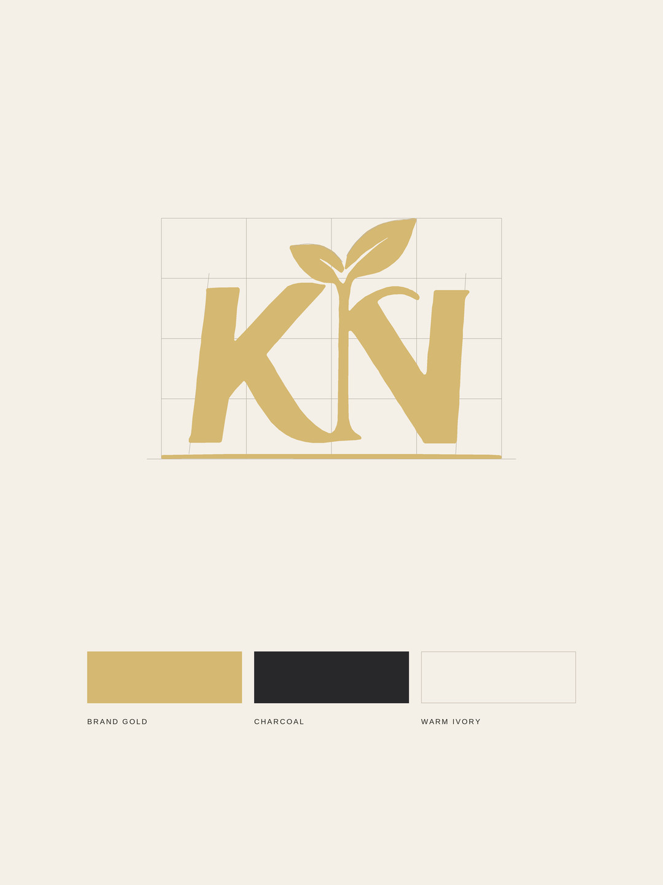
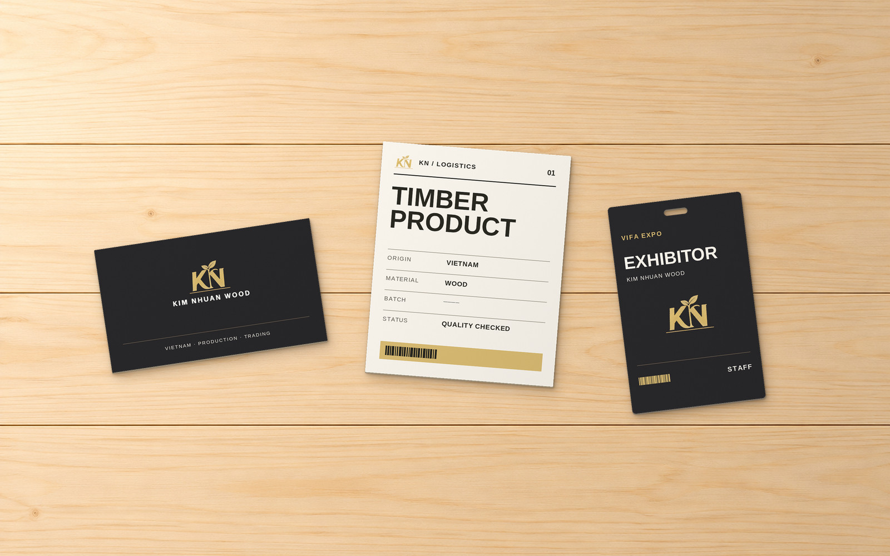
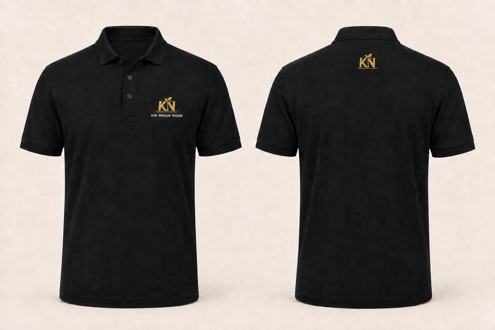
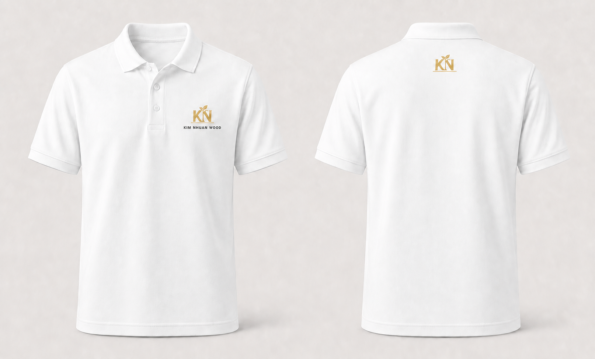
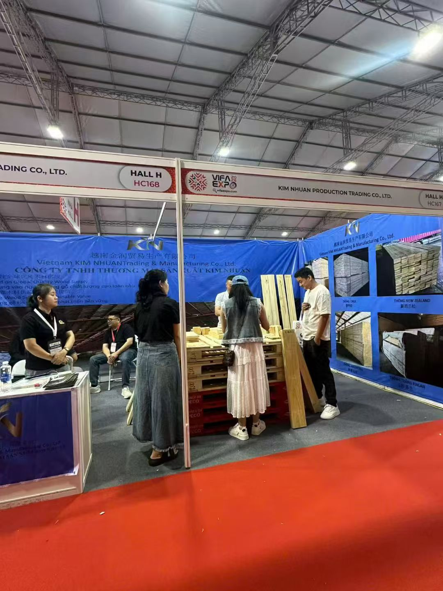

金润木业
金润贸易生产有限公司（越南）- 产品
- 木材与木制品
- 地点
- 越南
- 业务
- 生产 · 贸易
标志与工作服 · 委托项目
从企业标志一直做到工作服，让员工在现场一眼就能被认出来。
我们为金润木业（Kim Nhuan Trading & Production Co., Ltd.，越南）设计了 KN 标志，并延伸到名片、货运标签、展会证件和黑白两款 polo 衫。
展会照片记录标志在现场的使用情况；展位设计不在本项目范围内。
问题
金润木业做木材生产和贸易。它的标志要用在名片上、货运标签上，也要用在展会人群里走动的员工身上，在远处也要认得出。
思路
K 和 N 组成主体，顶部一片叶子指向木材与生长，底部一条基线让标志更稳。金色在贸易和展会场合给人专业、可靠的第一印象。

色彩系统
标志不拿来当装饰重复。名片用于介绍，货运标签服务木材贸易，展会证件帮助现场识别员工。

金润木业
金润贸易生产有限公司（越南）VIFA EXPO
完整标志放在胸前，近看能看清公司名；背面只放 KN 符号，位于后领下方，尺寸不放大。黑白两款 polo 衫用同样的尺寸和位置。


现场应用


成果
金润团队在 VIFA EXPO 接待访客时穿着这批 polo 衫。现场照片记录了标志在近处和远处的实际效果。
查看全部作品 ↗